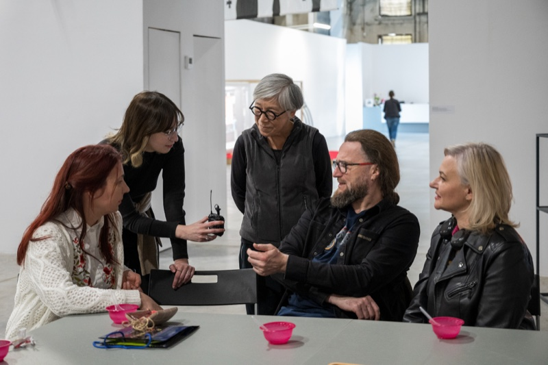

/International Exchange

共頻：臺灣與東歐當代藝術交流與展覽研究計畫Resonance: Contemporary Art Exchange and Exhibition Studies between Taiwan and Eastern Europe

邊界上的共感與轉譯Project Overview: Empathy and Translation at the Border

邊界上的共感與轉譯Project Overview: Empathy and Translation at the Border